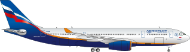

|  | |
| Aircraft type: | Long-haul passenger aircraft |
| Length (m): | 58,8 (A330-200); 63,7 (A330-300) |
| Wing span (m): | 60,3 |
| Cabin configuration (passengers): | 34C+ 207Y (A330-200) 30С+ 199Y (A330-200) 34C+ 268Y (A330-300) 28C+ 268Y (A330-300) 36C+ 265Y (A330-300) 28С+ 265Y (A330-300) |
| Max. take-off weight (tons): | 230 |
| Type of engine: |
2 jet engines |
| Cruising speed (km/h): | 900 |
| Max. altitude (km): | 12,5 |
| Maximum flight range (km): | 11200 (A330-200); 9500 (A330-300) |
| Aircraft names: |
|
| Aircraft type: | Short- & medium-haul passenger aircraft |
| Length (m): | 37,6 |
| Wing span (m): | 35,8 |
| Cabin configuration (passengers): | 20C+ 120Y 8C+ 150Y |
| Max. take-off weight (tons): | 75,5 |
| Type of engine: |
2 jet engines |
| Cruising speed (km/h): | 830 |
| Max. altitude (km): | 12,2 |
| Maximum flight range (km): | 4000 |
| Aircraft names: |
|